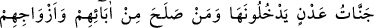
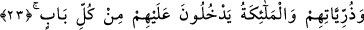
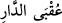
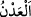
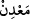

hukukuna riâyetsizliği riâyet ile, mahrum etmeyi de vermekle karşılayan kimselerdir.
Gölge salan ağaçtan eksik kalma
Sana taş vurana sen meyve bahşeyle
Sedeften hilim nüktesini hatırla
Sedef başını yarana cevher bahşeder
Ya da mânâ şöyledir: Kötülüğün peşinden iyilik yaparlar ve iyilikleri kötülükleri yok
eder.
İyiliklerin en güzeli ise Lâ ilâhe illallah kelimesidir. Çünkü baş organların en üstünü
olduğu gibi tevhid de dînin başı olduğundan ondan daha üstün iyilik yoktur.
İbn Keysan’dan nakledilmiştir: “Onlar günah işlediklerinde tevbe ederler.” Bu
durumda ‘iyilik’ten maksad tevbe, kötülükten maksad ise mâsıyettir.
Abdullah b. Mübarek der ki: “Burada bahsedilen iyilikler, cennetin sekiz kapısına
götürecek sekiz haslettir.”
“İşte onlar” bu sıfatları taşıyan kimseler “var ya, dünya yurdunun güzel sonu”
dünyanın âkıbeti ve dünya ehlinin döneceği güzel yer “sadece onlarındır.” Bu ise
mutlak âkıbet, yani cennettir. Cehennem ise kötü seçimlerinden ötürü kâfirlerin elde
edeceği sonuçtur. Cennetin aksine cehennemin dünya hayatına sonuç olarak verilmesi,
bizzat istenen bir şey değildir.
23. (O yurt) Adn cennetleridir; oraya babalarından, eşlerinden ve çocuklarından
sâlih olanlarla beraber girecekler, melekler de her kapıdan onların yanına
varacaklardır.
“(O yurt) Adn cennetleridir” Bu ifade, bir önceki âyette geçen “
dünya __WORD__ yurdunun güzel sonu” ifadesinden bedeldir. Yâni, yukarıda vasfı geçenler, cennetlerde
ikamet edecekler ve girdikten sonra bir daha oradan çıkmayacaklardır.
“__WORD__ (ikamet etmek)” mânâsınadır. Altın ve diğer cevherlerin çıktığı yere, orada
bulundukları, ya da insanlar yaz-kış orada ikamet ettiklerinden dolayı “__WORD__ denir.
Adn cennetlerinin cennetlerin ortasında en üstün ve en yüce cennet olduğu söylenir.
Adn cenneti, ilâhî tecellî ve ilâhî inkişâf makamıdır. Allah onu vâsıtasız olarak kendi
eliyle yaratmıştır.
Fakir (Bursevî) der ki: İkinci yorum bana göre daha uygundur. Çünkü cennette ikamet
etmek, kâmil olsun nâkıs olsun her mü’minin nâil olacağı bir şeydir. Adn cennetinde